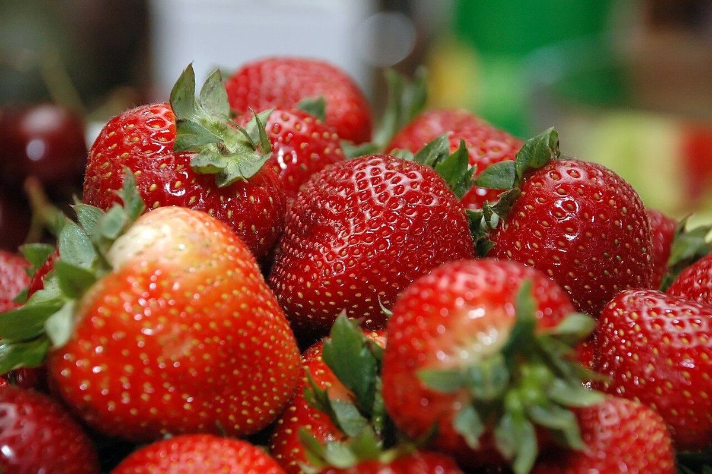
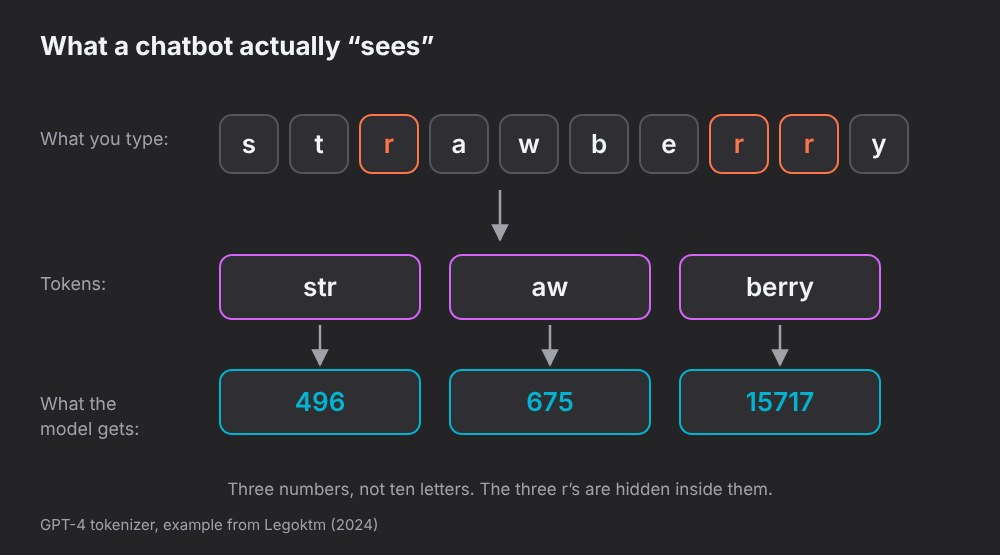
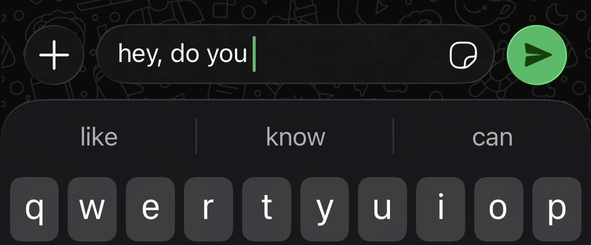

How Chatbots Work
One Word at a Time
In 2024 a very simple question went viral: how many letters "r" are there in "strawberry"? The answer is three. ChatGPT kept saying two, and when people asked "are you sure?", it answered "Yes, I'm sure." A program that can write essays and code couldn't count the letters in a word that a child can spell.
The reason says a lot about how chatbots work. They don't see letters and they don't look anything up. They just predict the next word.
Text Becomes Tokens

A chatbot never reads words the way we do. First the text is cut into small pieces called tokens. A token can be a whole word, part of a word, or a single symbol. OpenAI says that in English one token is about four characters, so 100 tokens are roughly 75 words.
Every token is then turned into a number. The tokenizer used by GPT-4 cuts "strawberry" into three pieces, "str", "aw" and "berry", which become the numbers 496, 675 and 15717. The model receives three numbers, not ten letters, so it never actually sees the three r's. That's why it gets the answer wrong.

Guessing the Next Word
At its core, a chatbot is a large language model: a giant neural network trained to do one thing, guess the next token. During training it reads trillions of tokens of text, and every time it tries to predict the next piece and corrects itself when it is wrong. OpenAI describes this first phase, called pretraining, as learning by "predicting the next word in huge amounts of text".
After enough practice it gets very good at it. If you give it "The capital of Italy is", it calculates that "Rome" is by far the most likely next token. It adds "Rome" to the text and predicts again, one token at a time, until the answer is finished. When you watch a chatbot "type", you are watching this happen live.

The model does not always pick the most likely token. A bit of randomness is added, which is why the same question can get two different answers.
Paying Attention
To predict well, the model has to understand how the words in a sentence are connected. Take "The trophy didn't fit in the suitcase because it was too big." What does "it" mean? The trophy. To get that right, the model has to link "it" with "trophy" and "big".
This is done with a technique called attention, from a 2017 paper by eight Google researchers called "Attention Is All You Need". Their design, the Transformer, looks at all the words of a text at the same time and works out which ones matter most to each other. Almost every modern chatbot is built on it. It's the "T" in GPT, which stands for Generative Pre-trained Transformer.
From Autocomplete to Assistant
A model that only predicts text isn't yet a good assistant. If you ask it a question, it might just continue with three more questions, because that also looks like normal text from the internet. So a second phase of training with human help is added.
OpenAI described this in 2022 with a model called InstructGPT. First, people wrote examples of good answers. Then they ranked different answers from the model from best to worst, and the model was trained to give the kind of answers people liked. This is called reinforcement learning from human feedback, or RLHF. The result surprised a lot of people: testers preferred the answers of a small 1.3-billion-parameter InstructGPT to those of the 175-billion-parameter GPT-3, even though it was more than 100 times smaller.
Why Chatbots Make Things Up
Because a chatbot predicts what sounds right, it can also produce answers that sound right but are false. These are called hallucinations. In 2025 OpenAI published research about one of the reasons: the way models are trained and tested rewards guessing more than admitting they don't know. Their example is simple. If a model is asked for someone's birthday and doesn't know it, a guess has a 1 in 365 chance of being right, while "I don't know" always gets zero points. So the model learns to guess.
This is why a chatbot can invent sources, quotes and facts with total confidence, as the cases in Using AI Well show.
A Prediction Machine
A chatbot isn't a search engine and it doesn't really "know" things like we do. Basically it's a very powerful prediction machine: it turns text into tokens, uses attention to understand the context, and writes the most likely answer one token at a time, shaped by what people rated as helpful. Knowing this makes it easier to use it well. It's great with language, but if something is important, check it.
Sources
- Legoktm. How many Rs are in the word strawberry? (2024)
- OpenAI Help Center. What are tokens and how to count them?
- OpenAI. Why language models hallucinate (2025)
- Vaswani et al. Attention Is All You Need (2017)
- Ouyang et al. Training language models to follow instructions with human feedback (InstructGPT) (2022)
Image credits
- Bowl of Strawberries by ShakataGaNai, CC BY-SA 3.0, via Wikimedia Commons